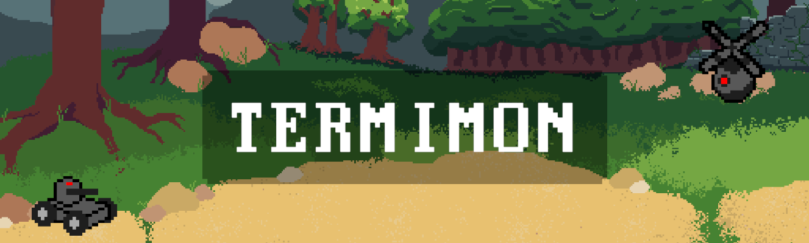
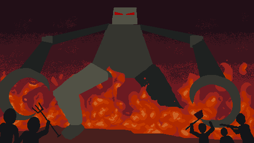
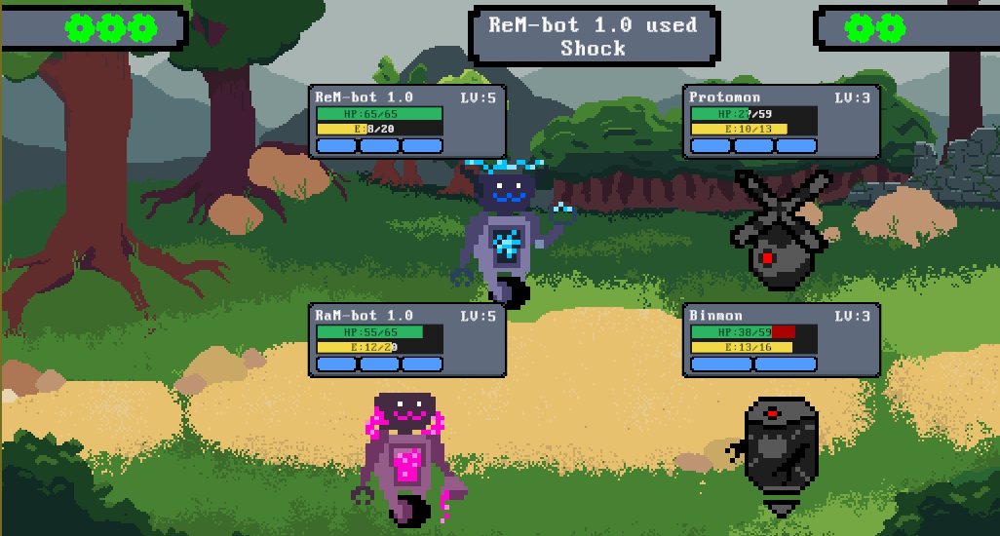
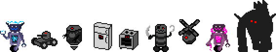
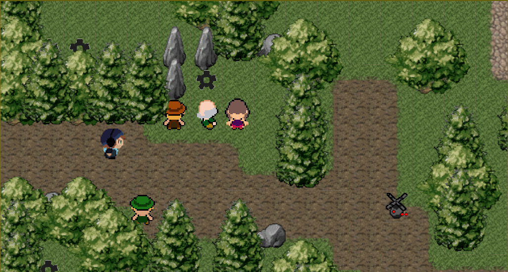
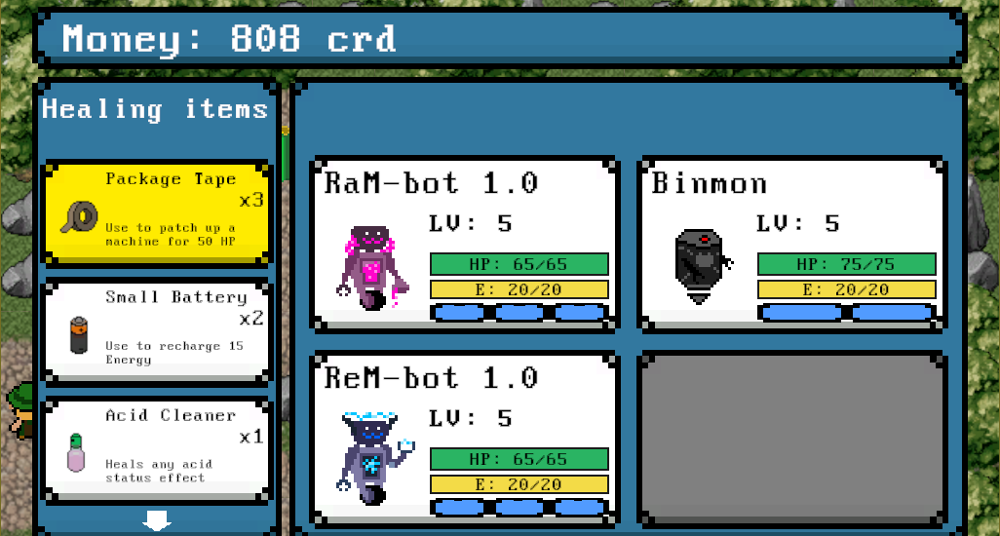

Back to home page

Termimon is a darker monster taming game set in an apocalyptic world.
The world has been taken over by the machines due to Internet of Things (IoT) becoming too powerful.
People are currently living in small fortified villages for now watching out for patrolling machines.
After having all programmers and hackers killed to avoid them being able to take down the IoT the IoT
doesn't find the humans more than just a pest and as long as they keep to their villages it's fine.
You play as Linus, a self-taught hacker that has been living out in the forest on his own.
He gets pulled into the plan to take down the IoT and since he's the only hacker remaining he will
have to travel between villages to gather the data and items necessary to finally hack the core of the IoT.
To help him, he's got his own two made machines as well as special control chips that allows
him to take over and use machines he encounters on the journey and let them fight for him.

Gameplay
The game is played in a top down fashion where you move around in an overworld.
The map is split into two types of areas: safe villages and the wild, dangerous areas.
You can restock, repair and talk to people in the villages.
In order to progress through the game you will need to travel from village to village.
Between the villages are the wild areas where machines roam.
This is where you will fight machines, capture new ones and stumble upon different events.
If you walk into the range of a patrolling machine a battle will start.

Battles
The battles are done with 2 machines on each side of the field.
Additional machines are on standby and will jump in once a machine is knocked out.
You input commands for both your machines and then the commands will play out in order of speed.
Each machine have different strengths and weaknesses as well as attacks that are unique to them.
This continues until each enemy machine have been knocked out or if you are defeated.
If you win, you get some rewards and continue on your journey.
There are a few different commands you can choose between.
- Attack: Deal damage or inflict status effects on the enemies.
- Guard: Protect yourself and regain energy.
- Switch: Switch for one of your standby machines.
- Capture: Capture an enemy machine if it's susceptible to it.
- Leave: Return to the village and live to fight another day.
In order to use attacks you will need to spend the indicated amount of energy.
If you're out of energy you will have to guard instead to regain some of your energy.
If a machine takes too much damage or gets knocked out during a battle they get more permanent damages.
Each of these damages will reduce the strength of the machine and can only be healed when in a village.

9 machines of 7 types
There are currently 9 different machines in the game which you can fight and/or capture.
These are then divided into 7 different types with their advantages and disadvantages.
If you use attacks of the correct type you will deal more damage but the opposite is also true.
The machines will always use their attack stats to attack enemies but how much damage they deal
depends on the defense of the enemy hit. The defense is split into 3 different types and which one
is used depends on what type of attack you use.
In order to strengthen your team you will need to capture new and stronger machines.
This is becuase the machines won't level up from using them in battle so their strength is fixed.
But you have an advantage compared to the machines you'll encounter. Modules.
Modules are power-up modules that can freely be installed into machines to give them extra stats or attacks.
This allows you to make some very interesting combinations which will give you an edge in battles.

The unknown wilds
The wilds in the game will be generated using a semi-random method.
This will make it so that each time you journey out into the wilds you'll get a different map.
The things you'll encounter can be anything from patrolling machines of different types to
different events that only takes place if you're lucky enough to encounter it.
You also get the chance to pick up items and money which will help you on the journey.
In order to get to the next village you will have to pass through a boss guarding the way to the next area.
To defeat it you will have to gather machines and items from your current area.
Once defeated you can continue your journey to the next area containing new and stronger machines.
Download
There is a prototype version of the game available on itch.io.
It contains the basic concept of the game with a few areas to explore and machines to battle and catch. It could be a game I revisit in the future as it has shown a bit of a promise.


Further development
The project is definitely over-scoped for a solo developer to finish without spending a lot of time on it.
If work were to continue on this game, making sure that all the planned features
got into the game would have been of highest priority. Here is what's left to add to the game:
Game content: Right now there is only a single area, 8 machines and 1 boss to fight.
For the full game there needs to be a lot more areas, machines, events, boss etc.
Of course, the story needs to be added as well.
The wilds: make it so that the wilds are generated so that it's different every time you journey outside the village.
This will make retreating back to the village cost more since you will have to explore the area again.
There are also no events or quests in the wild which would make the game more interesting.
Machines: More machines and types would be necessary. Modules are also not yet implemented into the game.
There should also be possible to craft different modules if you find the necessary materials.
The starting machines are also special and when you find certain items you will get to upgrade them so that
you can bring them with you through the whole game.